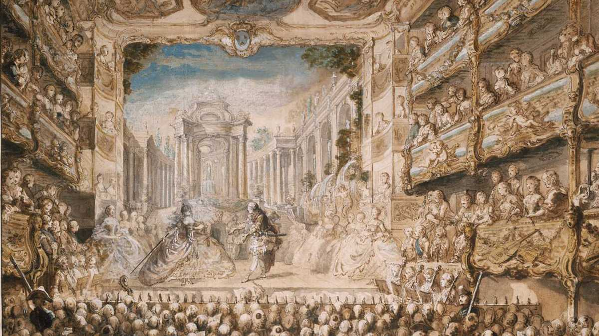

Secular music grows, but religious music remains important.
3. VOCAL MUSIC
3.1. Opera

Opera originated in Italy in the early 17th century with composers such as Jacopo Peri and Claudio Monteverdi, author of Orfeo (1607), considered the first great opera. Opera combines music, theatre, poetry and dance; it is organised into arias, recitatives and choruses.
- Arias: melodic and emotional solos for vocal display, with elaborate music and a pause in the action.
- Recitatives: sung speech to advance the plot, with simple music and speech rhythm.
- Choruses: pieces for groups that comment on the action or represent the crowd, adding texture and dramatic depth, unlike individual solos.
The three main genres are:
- Opera seria: mythological and heroic themes. (We listen to: Julius Caesar in Egypt by G. F. Handel | Aria: Se pietà di me non senti).
- Opera bufa: Opera buffa: comical, everyday plots. (We listen to: La serva padrona by Pergolesi | Aria de Serpina)
- In Spain, zarzuela emerges, alternating between sung and spoken parts. (We listen to: Celos aun del aire matan; (libretto by Pedro Calderón de la Barca and music by Juan Hidalgo de Polanco).
3.2. Religious music
Although secular music is gaining ground, the Church continues to play an important role. We highlight three types of pieces:
- Oratorio: similar to opera, but with a religious theme and without staging. (Hallelujah!; Messiah, by Handel; chorus).
- Cantata: a short work with religious text; J.S. Bach stands out (Jesu, Joy of Man's Desiring de J.S. Bach).
- Passion: recounts the death of Christ. (Pasión según San Mateo, by J.S. Bach; Overture).